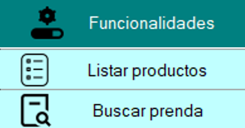
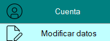

MANUAL DE USUARIO
Nombre del servicio: Costurería "El WUASHO"
Versión: 1.0.1
Fecha de publicación: 16/06/2024
Realizado en: Escuela Superior Politécnica de Chimborazo
Contacto de soporte: +593 985108726
Introducción
Este manual de usuario ha sido diseñado para proporcionar a los clientes
una guía completa y detallada sobre el funcionamiento
del programa Costureras "EL WUASHO". Su propósito es ayudar a
los usuarios a comprender y utilizar todas las funcionalidades y
características del programa de manera efectiva.
Funcionalidades
Aquí se visualizara 3 operaciones que puede hacer el cliente:
- Listar: Se va listar todas las prendas.
- Buscar prendas: Aquí se va especificar que prenda por categoría se desea buscar.

Cuenta
En este apartado al dar clic en el botón "Modificar datos" se le abrirá una ventana
en donde se podrá visualizar los campos que se puedan editar.
- Modificar datos: Antes de ingresar a la ventana de modificar datos se le va pedir la cédula para corroborar sus datos
por seguridad. Una vez que se logre verificar su identificación por su cédula podra editar los campos en donde tendra
tres botones, uno para guardar cambios, otro para cancelar y para volver.

Cerrar sesión
En este apartado el dar clic en el botón "Cerrar sesión" el usuario sale del programa.